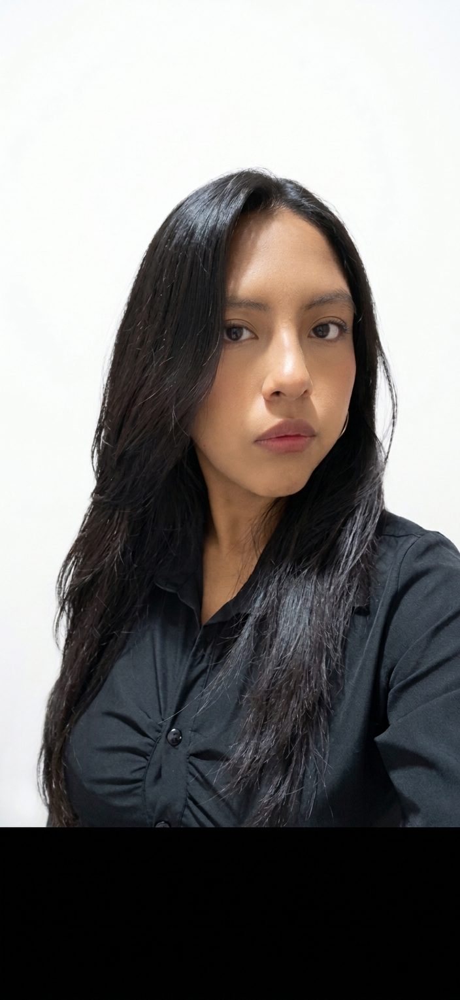

Estudiante de Administración de Empresas en Universidad Católica San Pablo
¡Hola! Soy estudiante de Administración de Empresas. ¡Hola! Soy una apasionada y creadora multidisciplinaria impulsada por la curiosidad artística y la expresión en todas sus formas. Mi universo creativo se divide entre el sonido, el movimiento y el aprendizaje continuo. En el ámbito musical, interpretó piano, guitarra acústica y guitarra eléctrica, utilizándolos como herramientas para conectar con emociones y explorar distintos matices sonoros. Mi conexión con las artes escénicas se extiende a través de la danza, donde abarco una amplia variedad de géneros que van desde la energía urbana del Hip Hop, Breaking y Dancehall, hasta la riqueza cultural de la Marinera y el Afrofusion. Además, encuentro en la pintura y la lectura dos vías fundamentales para nutrir mi imaginación, inspirar nuevos proyectos y mantener una perspectiva creativa en constante evolución. Con un perfil multicultural y mente abierta, continúo expandiendo mis horizontes lingüísticos: cuento con conocimientos en inglés y portugués, y me encuentro explorando de manera activa el idioma coreano..